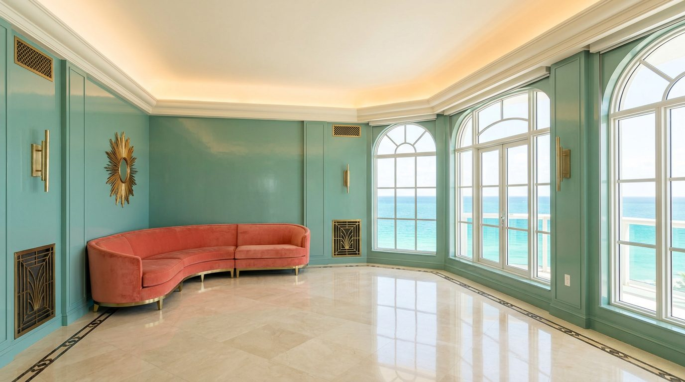

Atlante · INT-US-03 · Stati Uniti · USA
Appartamento Art Déco a Miami Beach, vista oceano
Esempi · esterno e interno


Perché funziona
Miami è il mercato americano dove il loud è legittimo e atteso: lacca, ottone brunito, marmo lucido e velluto sono il linguaggio locale del Deco. Il made in Italy vince se il loud resta manifattura — laccatura a specchio, intarsio del marmo, cucitura del velluto — invece di diventare scenografia da hotel. Qui il registro acceso è una credenziale, non un rischio.
Architettura · elementi riproducibili
- soffitto a 3,4-4,2 m con gola continua e illuminazione indiretta
- pavimento in marmo lucido con bordo scuro intarsiato a 15 cm dal filo
- parete laccata a specchio, 2,4 x 3,6 m, su un solo lato
- nicchia bar con fondo in specchio e ripiani in ottone brunito
- eyebrow in gesso sopra le finestre, sporgenza 40 cm
- finestre con profilo a gomito e vetrocemento nel vano scala
- tenda in velluto corallo a tutta altezza, 6 m di sviluppo
- profilo a gradoni del parapetto, tre risalti da 20 cm
- pavimento in terrazzo veneziano nel disimpegno
Verificato: il Miami Beach Architectural District conta 960 edifici storici nel quartiere di South Beach.
Verificato: Henry Hohauser lavora su simmetria della facciata, profilo a gradoni, vetrocemento, bordi curvi, neon e 'eyebrow' sopra le finestre.
Verificato: il Fontainebleau di Morris Lapidus (1954) è nel registro MiMo ed è iscritto al National Register dal 2008.
Valutazione: 3,4-4,2 m è un parametro di set per un appartamento; gli atri degli alberghi Deco stanno più in alto, e la doppia altezza è riservata all'ingresso.
Luce
Prompt di generazione (EN)
Editorial interior photograph of an empty Art Deco apartment living room in Miami Beach, 3.6 m ceiling, cream polished marble floor with a dark border inlay, one wall lacquered in deep teal, a coral velvet curtain falling full height on camera right, burnished brass reveals and a mirrored bar niche, curved plaster eyebrow over the window, terrazzo threshold, hard high sun from the east bouncing off the ocean at 10 am, short crisp shadows, high-key grade with saturated teal and coral blocks, camera at 1.4 m, symmetrical one-point perspective, 35 mm lens at f/8, no people, no text, no logos